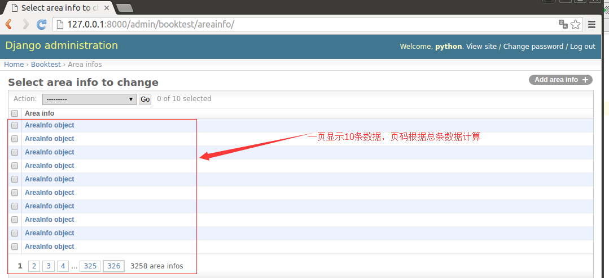
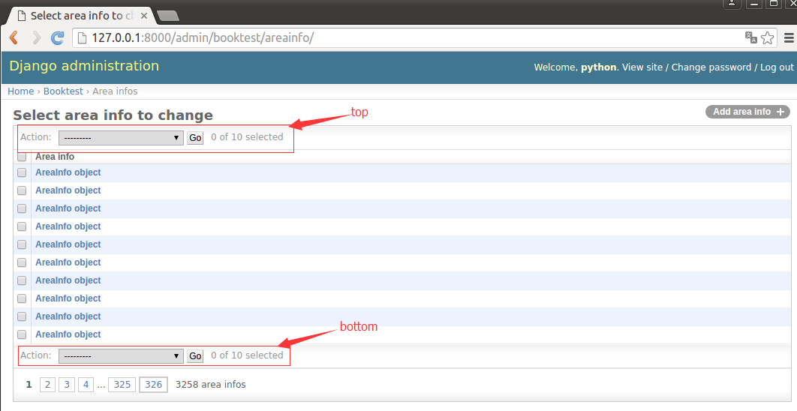
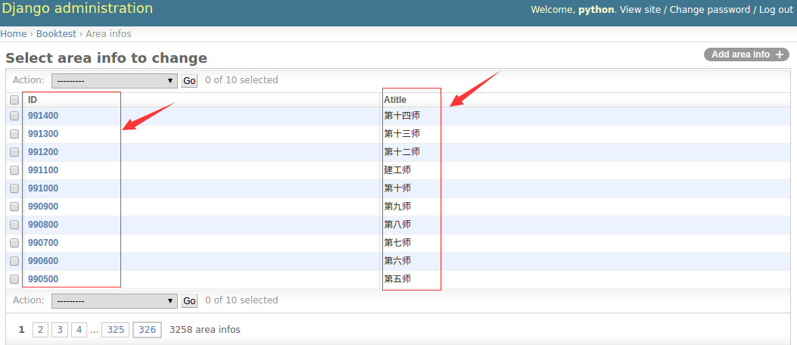
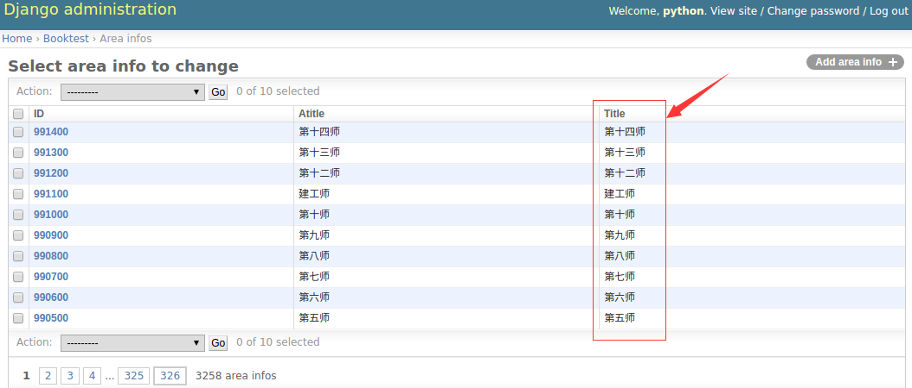
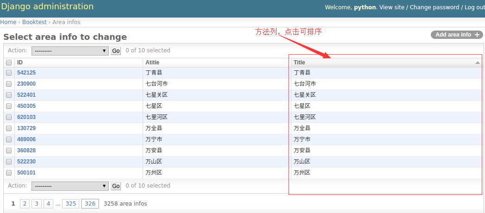
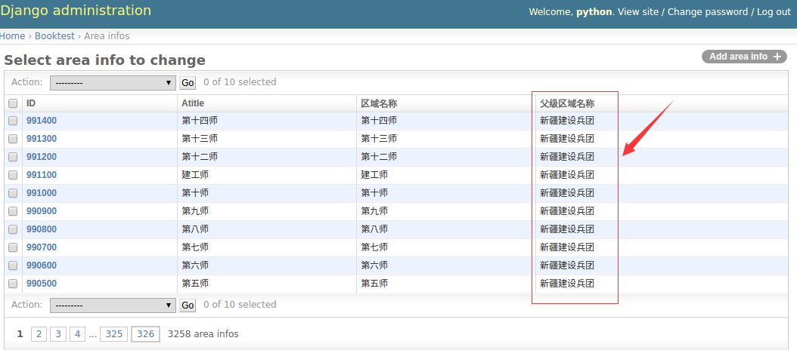
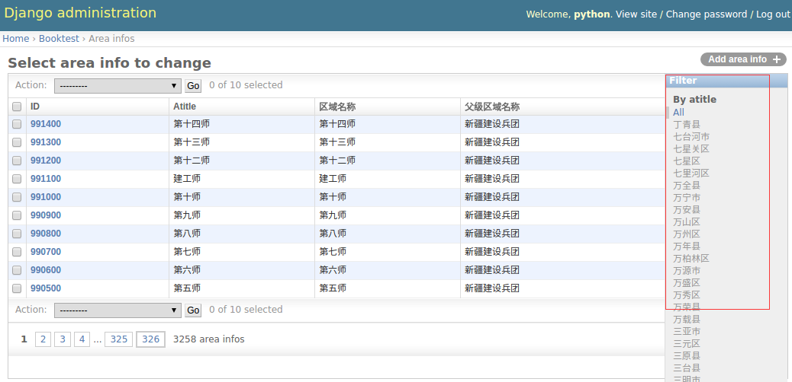
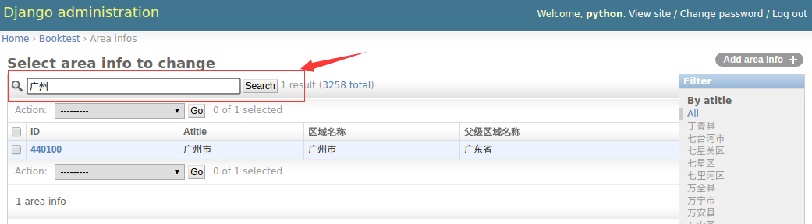
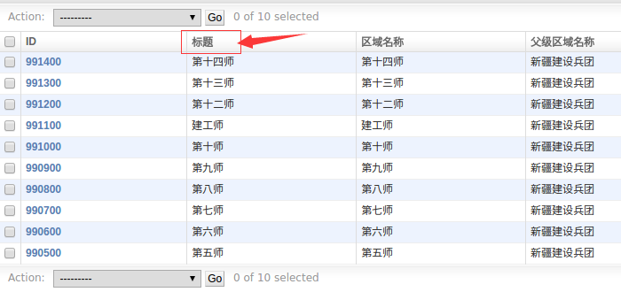

列表页选项
页大小
每页中显示多少条数据，默认为每页显示100条数据，属性如下：
list_per_page=100
1）打开booktest/admin.py文件，修改AreaAdmin类如下：
class AreaAdmin(admin.ModelAdmin):
list_per_page = 10
2）在浏览器中查看区域信息的列表页面，效果如下图：

"操作选项"的位置
顶部显示的属性，设置为True在顶部显示，设置为False不在顶部显示，默认为True。
actions_on_top=True
底部显示的属性，设置为True在底部显示，设置为False不在底部显示，默认为False。
actions_on_bottom=False
1）打开booktest/admin.py文件，修改AreaAdmin类如下：
class AreaAdmin(admin.ModelAdmin):
...
actions_on_top = True
actions_on_bottom = True
2）在浏览器中刷新效果如下图：

列表中的列
属性如下：
list_display=[模型字段1,模型字段2,...]
1）打开booktest/admin.py文件，修改AreaAdmin类如下：
class AreaAdmin(admin.ModelAdmin):
...
list_display = ['id','atitle']
2）在浏览器中刷新效果如下图：

点击列头可以进行升序或降序排列。
将方法作为列
列可以是模型字段，还可以是模型方法，要求方法有返回值。
1）打开booktest/models.py文件，修改AreaInfo类如下：
class AreaInfo(models.Model):
...
def title(self):
return self.atitle
2）打开booktest/admin.py文件，修改AreaAdmin类如下：
class AreaAdmin(admin.ModelAdmin):
...
list_display = ['id','atitle','title']
3）在浏览器中刷新效果如下图：

方法列是不能排序的，如果需要排序需要为方法指定排序依据。
admin_order_field=模型类字段
1）打开booktest/models.py文件，修改AreaInfo类如下：
class AreaInfo(models.Model):
...
def title(self):
return self.atitle
title.admin_order_field='atitle'
2）在浏览器中刷新效果如下图：

列标题
列标题默认为属性或方法的名称，可以通过属性设置。需要先将模型字段封装成方法，再对方法使用这个属性，模型字段不能直接使用这个属性。
short_description='列标题'
1）打开booktest/models.py文件，修改AreaInfo类如下：
class AreaInfo(models.Model):
...
title.short_description='区域名称'
2）在浏览器中刷新效果如下图：

关联对象
无法直接访问关联对象的属性或方法，可以在模型类中封装方法，访问关联对象的成员。
1）打开booktest/models.py文件，修改AreaInfo类如下：
class AreaInfo(models.Model):
...
def parent(self):
if self.aParent is None:
return ''
return self.aParent.atitle
parent.short_description='父级区域名称'
2）打开booktest/admin.py文件，修改AreaAdmin类如下：
class AreaAdmin(admin.ModelAdmin):
...
list_display = ['id','atitle','title','parent']
3）在浏览器中刷新效果如下图：

右侧栏过滤器
属性如下，只能接收字段，会将对应字段的值列出来，用于快速过滤。一般用于有重复值的字段。
list_filter=[]
1）打开booktest/admin.py文件，修改AreaAdmin类如下：
class AreaAdmin(admin.ModelAdmin):
...
list_filter=['atitle']
2）在浏览器中刷新效果如下图：

搜索框
属性如下，用于对指定字段的值进行搜索，支持模糊查询。列表类型，表示在这些字段上进行搜索。
search_fields=[]
1）打开booktest/admin.py文件，修改AreaAdmin类如下：
class AreaAdmin(admin.ModelAdmin):
...
search_fields=['atitle']
2）在浏览器中刷新效果如下图：

中文标题
1）打开booktest/models.py文件，修改模型类，为属性指定verbose_name参数，即第一个参数。
class AreaInfo(models.Model):
atitle=models.CharField('标题',max_length=30)#名称
...
2）在浏览器中刷新效果如下图：
